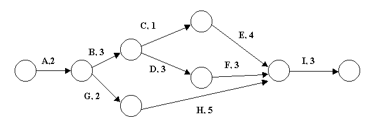
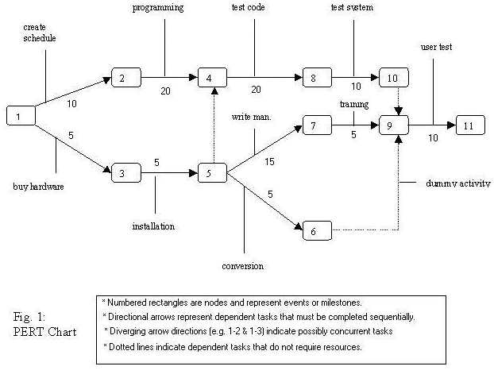

|
Project Management Tools Gantt charts
|
|
A Gantt chart lists tasks in a project on a timeline with their interdependencies. It often also shows who is responsible for what task. It is especially useful for planning tasks in a project, and monitoring progress as the project goes on. Gantt charts emphasise time rather than task relationships.
Visit the strangely popular Gantt chart tutorial A PERT chart, in comparison, looks more like a flow chart and concentrates on the relationships between tasks (especially their dependencies) and less on the timeline. PERT charts emphasise task relationships rather than time.  Visit the PERT chart tutorial which, for some reason, is the most popular page on the entire site. The PERT chart is sometimes preferred over the Gantt chart because it clearly illustrates task dependencies. Both tools are commonly used, and they are often both used for the same project. A PERT chart is a project management tool used to schedule, organize, and coordinate tasks within a project. PERT stands for Program Evaluation Review Technique, a methodology developed by the U.S. Navy in the 1950s to manage the Polaris submarine missile program. A similar methodology, the Critical Path Method (CPM), which was developed for project management in the private sector at about the same time, has become synonymous with PERT, so that the technique is known by any variation on the names: PERT, CPM, or PERT/CPM.  A PERT chart presents a graphic illustration of a project as a network diagram consisting of numbered nodes (either circles or rectangles) representing events, or milestones in the project linked by labelled vectors (directional lines) representing tasks in the project. The direction of the arrows on the lines indicates the sequence of tasks. In the diagram, for example, the tasks between nodes 1, 2, 4, 8, and 10 must be completed in sequence. These are called dependent or serial tasks. The tasks between nodes 1 and 2, and nodes 1 and 3 are not dependent on the completion of one to start the other and can be undertaken simultaneously. These tasks are called parallel or concurrent tasks. Tasks that must be completed in sequence but that don't require resources or completion time are considered to have event dependency. These are represented by dotted lines with arrows and are called dummy activities. For example, the dashed arrow linking nodes 6 and 9 indicates that the system files must be converted before the user test can take place, but that the resources and time required to prepare for the user test (writing the user manual and user training) are on another path. Numbers on the opposite sides of the vectors indicate the time allotted for the task. This page covers WBS, CPM, PERT, Gantt This page covers project management terms. |
Back to the IT Lecture Notes index
© Mark Kelly 2001-
Last modified Wednesday, November 23, 2011 12:19 PM
IT Lecture notes © Mark Kelly